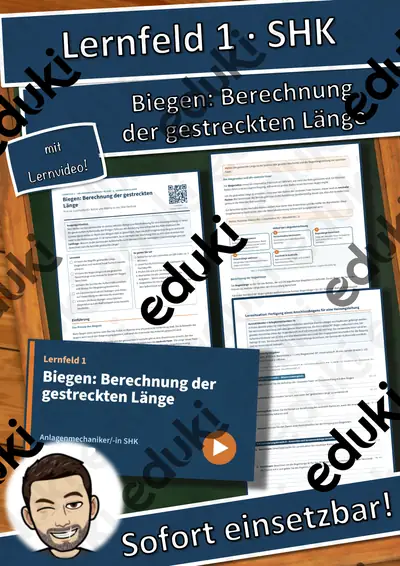
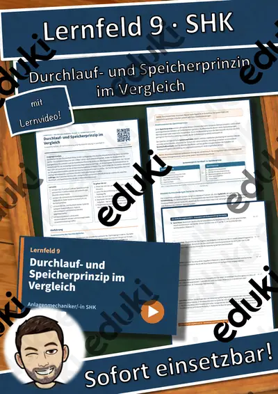
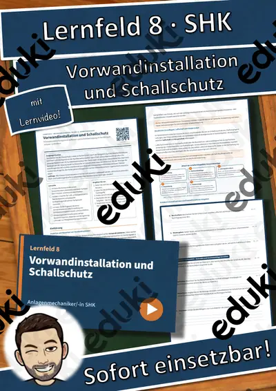

LF 12 Anlagenmechaniker/-in SHK: Wärmepumpen: Funktionsweise und Effizienz im SHK-Betrieb – Übungen, Lösungen + Lernvide
Wärmepumpen: Funktionsweise und Effizienz im SHK-Betrieb – Grundlagen des Kältekreislaufs und Berechnung der Leistungszahl
Für den Berufsschulunterricht im Ausbildungsberuf Anlagenmechaniker/-in für Sanitär-, Heizungs- und Klimatechnik, Lernfeld 12 „Ressourcenschonende Wärmeerzeugungsanlagen installieren“ (3. Ausbildungsjahr).
Das steckt drin (8 Seiten):
- Einstieg mit realistischer Ausgangssituation und Leitfrage
- Einführung als Sachtext auf Berufsschulniveau mit Merkekästen
- Schaubild und Fachbegriffe-Tabelle
- handlungsorientierte Lernsituation mit Materialien
- 11 Aufgaben nach Anforderungsbereichen (I: 4, II: 5, III: 2) mit Punkten und Sozialform
- Selbstcheck, Prüfungstipp und Notenorientierung
- ausführliche Lösungen auf eigenen Seiten
- QR-Code zum passenden Lernvideo (ca. 3–6 Minuten, mit Untertiteln)Lernziele:
- Ich kann die Funktionsweise einer Wärmepumpe anhand des Kältekreislaufs erklären.
- Ich kann die Komponenten eines Kältekreislaufs benennen und deren Aufgabe beschreiben.
- Ich kann die Leistungszahl (COP) und die Jahresarbeitszahl (JAZ) berechnen und interpretieren.
- Ich kann die Bedeutung von Wärmepumpen für eine ressourcenschonende Wärmeversorgung beurteilen.
- Ich kann Kunden zu Effizienzkriterien von Wärmepumpen beraten.
Alle Betriebe, Personen und Fälle sind frei erfunden, alle Grafiken eigene Darstellungen. Sofort einsetzbar im Unterricht, für Vertretungsstunden, zur Prüfungsvorbereitung und zum selbstständigen Lernen.
FachTechnik (BS)
Klasse–
SchulformBerufsschule
MaterialartArbeitsblätter, Prüfungsvorbereitung
Ähnliche Materialien

LF 6 Anlagenmechaniker/-in SHK: Gefälle und Fließgeschwindigkeit in Entwässerungsleitungen – Übungen, Lösungen + Lernvid

LF 1 Anlagenmechaniker/-in SHK: Biegen: Berechnung der gestreckten Länge – Übungen, Lösungen + Lernvideo

LF 1 Anlagenmechaniker/-in SHK: Zeichnungen und Stücklisten lesen – Übungen, Lösungen + Lernvideo

LF 14 Anlagenmechaniker/-in SHK: Gebäudeleittechnik und Fernüberwachung – Übungen, Lösungen + Lernvideo

LF 9 Anlagenmechaniker/-in SHK: Durchlauf- und Speicherprinzip im Vergleich – Übungen, Lösungen + Lernvideo

LF 8 Anlagenmechaniker/-in SHK: Vorwandinstallation und Schallschutz – Übungen, Lösungen + Lernvideo

LF 12 Anlagenmechaniker/-in SHK: Pufferspeicher und Anlagenhydraulik – Übungen, Lösungen + Lernvideo